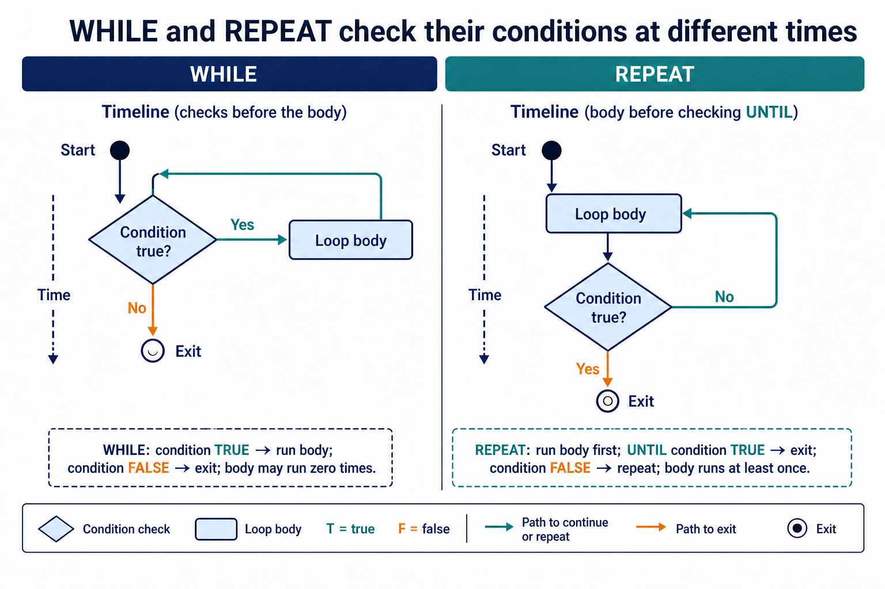

IF/ELSE/nested selection, CASE, count-controlled loops, post-condition and pre-condition loops: Pre-condition and post-condition loops
Visual overview
WHILE and REPEAT check their conditions at different times

Visual transcript
- WHILE checks before the body and can execute zero times.
- REPEAT executes the body before checking UNTIL.
- A REPEAT loop therefore executes at least once.
Core explanation
Use IF...THEN...ELSE...ENDIF for Boolean decisions and nested IF statements, and CASE...OF...OTHERWISE...ENDCASE when one expression is compared with several discrete values.
Use FOR...TO...NEXT when the repetition count or inclusive counter range is known before the loop. Use WHILE...DO...ENDWHILE when the condition must be checked before a body that may run zero times. Use REPEAT...UNTIL when the body must run before its stopping condition is checked.
Every selection and loop must be complete, correctly nested and traceable. Choose the construct from the data and stopping rule rather than from which syntax is shortest.
Selecting and testing a control structure
- Identify the control requirementDecide whether the problem needs a choice, known-count repetition, pre-condition repetition or post-condition repetition.
- Use the matching complete Cambridge constructInclude the condition, body, alternative where needed and the correct closing keyword.
- Test entry, branch and exit behaviourUse values that take each branch and check zero, one and repeated loop executions where applicable.
Worked example · Choose and trace the right loop
- Known count
FOR Index <- 1 TO 10 OUTPUT Value[Index] NEXT Index - May run zero times
WHILE Password <> CorrectPassword AND Attempts < 3 DO INPUT Password Attempts <- Attempts + 1 ENDWHILE - Must run once
REPEAT INPUT Mark UNTIL Mark >= 0 AND Mark <= 100 - Decision
The array traversal has known bounds, password validation may already be complete, and mark input must occur before the value can be tested.